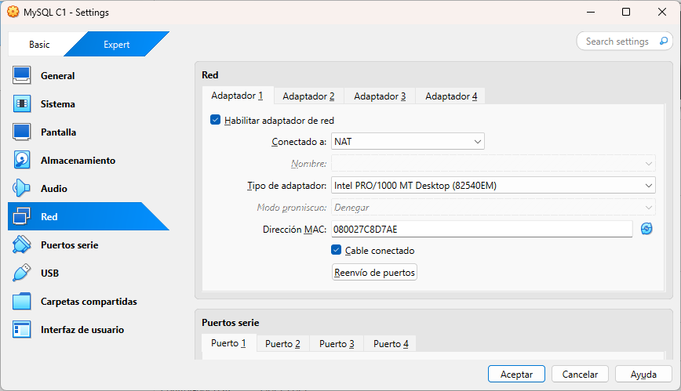
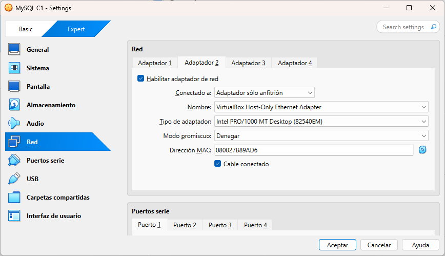
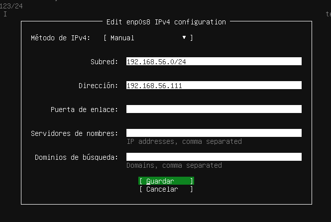
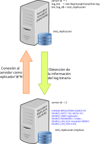

Bases de datos distribuidas
En este documento veremos como crear bases de datos distribuidas entre varios servidores MySQL. Se seguirán los ejemplos creados por el profesor Emiliano Gómez Vázquez en su curso de ASGBD.
La única variación consistirá en que, en lugar de utilizar máquinas virtuales MS. Windows 10, utilizaremos máquinas virtuales Linux (Ubuntu Server 24.04) en VirtualBox.
Otro cambio será que, en lugar de utilizar una red NAT para interconectar las máquinas virtuales, utilizaremos dos interfaces de red (o adaptadores) para cada máquina virtual. El primero será el que viene configurado por defecto en VirtualBox, NAT que nos permitirá tener conexión a Internet desde las máquinas virtuales. El segundo adaptador será de tipo host-only (solo-anfitrión) y permitirá que las máquinas virtuales se vean entre sí y vean al anfitrión. De este modo tendremos acceso a Internet y podremos conectarnos a las máquinas virtuales desde el anfitrión y entre ellas.
Configuración de la red
Configuración de las máquinas virtuales
Una vez creada cada máquina virtual (y antes de iniciar el proceso de instalación del sistema operativo), se han de configurar los interfaces de red de cada máquina virtual.
Usaremos la misma configuración para todas la máquinas virtuales de los ejemplos.
Configuración de red (VirtualBox)
En VirtualBox, seleccionamos la máquina virtual y vamos a Configuración (Control-S)-> Red. Ahí podremos ver varias pestañas, una por cada adaptador o interfaz de red. En la primera pestaña (adaptador 1) dejaremos la configuración tal y como está (NAT) para que la máquina tenga acceso a Internet. En la segunda interfaz de red (adaptador 2) habilitaremos el adaptador y seleccionaremos Adaptador de solo-anfitrión (Host-only) para que la máquina sea visibles tanto desde el anfitrión como desde las demás máquinas que incluyamos en dicha red.
Configuración del adaptador 1 (se deja como está):

Configuración del segundo adaptador (Sólo anfitrión):

Configuración del sistema operativo
El siguiente paso de configuración se realizará durante la instalación del sistema operativo.
Configuración de la red (Ubuntu Server)
Durante la instalación de Ubuntu Server 24.04, cuando lleguemos a la pantalla Network configuration, veremos dos interfaces de red llamados enp0s3 y enp0s8. La primera será la interfaz NAT y no hemos de modificarla. La segunda será la interfaz conectada a la red host-only y tendrá un valor asignado por el servidor DHCP de VirtualBox. Si decidimos utilizar dicha dirección IP sería conveniente que la anotásemos pues la hemos de usar a establecer conexiones (SSH, MySQL Shell, Workbench, etc.).
Si por el contrario queremos decidir nosotros la dirección hemos de seleccionar el interfaz enp0s8, modificar el desplegable IPv4 y, dentro del mismo establecer una dirección dentro del rango válido 192.168.56.0/24, 192.168.56.101 para el servidor, 192.168.56.102 para el primer servidor réplica, etc. Queda a vuestra elección.
En el apartado de Network configuration:

Seleccionamos el interfaz ethernet enp0s8 y editamos el protocolo IPv4:

Seleccionamos la opción manual:

Establecemos la dirección IP (fija) que deseemos (dentro de la red 192.168.56.0/24):

Configuración de SSH
Configurando el servicio SSH podremos conectarnos a la máquina virtual desde un terminal de la máquina anfitrión, lo que nos facilitará la realización de los siguientes pasos de configuración.
Cuando lleguemos a la pantalla de instalación con el título SSH configuration simplemente hemos de marcar la casilla que inidca Instalar servidor OpenSSH.

Estos pasos serán idénticos para todas las máquina virtual que creemos. Obviamente, si establecemos las direcciones IP a mano, hemos de usar direcciones distintas para cada máquina.
Configuración de MySQL
Una vez instalado el sistema operativo y reiniciada la máquina tendremos que instalar también el servidor MySQL. Esto podremos hacerlo entrando mediante login en la ventana de la máquina virtual o desde un terminal de la máquina anfitrión mediante una conexión SSH. En este ejemplo utilizaremos SSH siempre que sea posible.
Conexión a la máquina virtual
Una vez finalizada la instalación de Ubuntu Server y reiniciada la máquina virtual, para conectamos a ella por SSH desde el anfitrión utilizaremos el siguiente comando:
xxxxxxxxxxssh usuario@192.168.56.101
Substituyendo usuario por el nombre de usuario que hayamos puesto durante la instalación y la dirección IP por la que hayamos asignado a la máquina virtual.
Instalación de MySQL
Una vez conectados a la máquina virtual (vía SSH o desde la propia máquina) hemos de instalar el servidor MySQL. Para ello, primero actualizaremos los paquetes del sistema con los comandos:
xxxxxxxxxxsudo apt updatesudo apt upgradeUna vez finalizada el proceso de actualización instalaremos el servidor MySQL con el siguiente comando:
xxxxxxxxxxsudo apt install mysql-serverConfiguración del Servidor MySQL
En este punto ya tenemos instalado y en funcionamiento una servidor MySQL. Podemos comprobarlo utilizando el comando:
xxxxxxxxxx$ systemctl status mysql.service● mysql.service - MySQL Community Server Loaded: loaded (/usr/lib/systemd/system/mysql.service; enabled; preset: enabled) Active: active (running) since Thu 2025-05-01 17:05:35 UTC; 1h 19min ago Process: 661 ExecStartPre=/usr/share/mysql/mysql-systemd-start pre (code=exited, status=0/SUCCESS) Main PID: 780 (mysqld) Status: "Server is operational" Tasks: 43 (limit: 2272) Memory: 517.5M (peak: 517.8M) CPU: 53.093s CGroup: /system.slice/mysql.service └─780 /usr/sbin/mysqld
may 01 17:05:25 mysql-d2 systemd[1]: Starting mysql.service - MySQL Community Server...may 01 17:05:35 mysql-d2 systemd[1]: Started mysql.service - MySQL Community Server.Por defecto este servidor sólo acepta conexiones locales. Esto significa que no podremos conectarnos a él desde el anfitrión o desde otras máquinas virtuales (no podremos establecer una conexión mediante MySQL Workbench, MySQL Shell, etc.).
Para hacer que el servidor acepte conexiones remotas de editar el archivo de configuración de MySQL. Éste se encuentra en la ruta /etc/mysql/mysql.conf.d/mysqld.cnf.
Para editar el archivo podemos utilizar los editores de texto de consola nano o vim.
Permitir conexiones remotas
Una vez conectados a la máquina virtual mediante SSH editaremos el archivo /etc/mysql/mysql.conf.d/mysqld.cnf modificando las siguientes líneas cambiando:
xxxxxxxxxxbind-address = 127.0.0.1mysqlx-bind-address = 127.0.0.1A:
xxxxxxxxxxbind-address = 127.0.0.1,192.168.56.101mysqlx-bind-address = 127.0.0.1,192.168.56.101En lugar de la dirección 192.168.56.101 hemos de poner la dirección IP de la máquina virtual que hemos asignado a la interfaz de red enp0s8 (la segunda interfaz).
Nota: Si hemos olvidado la dirección IP de la máquina virtual, podemos consultarla con el comando hostname -I que nos mostrará todas las direcciones IP asignadas a la máquina virtual.
xxxxxxxxxx$ hostname -I10.0.2.15 192.168.56.110 fd17:625c:f037:2:a00:27ff:fef7:f8f3La dirección que nos interesa es la segunda: 192.168.56.101. La primera es la de la red NAT y la tercera es la dirección IPv6.
Cada vez que realicemos un cambio en la configuración del servidor MySQL hemos de reiniciar el servicio para que los cambios surtan efecto. Para ello, utilizamos el siguiente comando:
xxxxxxxxxxsudo systemctl restart mysql.service¿Qué hemos hecho?
Los cambios que hemos realizado en la configuración del servidor tendrán las siguientes consecuencias:
La primera línea:
bind-address=127.0.0.1,192.168.56.101indica al servidor MySQL que acepte conexiones locales (127.0.0.1o interfaz de loopback) y además escuche también en la interfaz de red con dirección IP192.168.56.101(enp0s8) para que podemos conectarnos a ella desde el anfitrión o desde otras máquinas virtuales.La segunda línea:
mysqlx-bind-address=127.0.0.1,192.168.56.101indica al servidor MySQL lo mismo que en el caso anterior pero para conexiones de la aplicación MySQL Shell que podemos descargar en este enlace o instalar mediantewingetcon el comando de Powershell:
xxxxxxxxxxwinget install Oracle.MySQLShellMySQL Shell es una aplicación de línea de comandos que nos permitirá ejecutar scripts, escribir sentencias SQL, etc. en cualquier servidor NySQL. No es imprescindible para la práctica pero nos hará la vida más fácil a la hora de realizar consultas y operaciones en el servidor MySQL.

Creación de usuario administrador de MySQL
Aunque ya hemos configurado el servidor MySQL para que acepte conexiones remotas, aún no podremos conectarnos al mismo de manera remota. Esto se debe a que no disponemos de ningún usuario que se pueda conectar en remoto.
Para solventar esto hemos de conectarnos de nuevo a la máquina virtual Linux y crear un usuario con los privilegios necesarios siguiendo los siguientes pasos:
Nos conectamos a la máquina virtual con el siguiente comando:
ssh usuario@192.168.56.101.Accedemos a la consola de MySQL con el siguiente comando:
sudo mysql.
Una vez dentro de la consola de MySQL como administradores procedemos a escribir la sentencia SQL para crear el usuario:
xxxxxxxxxxCREATE USER 'admin'@'%' IDENTIFIED BY '123abc..';Y la sentencia para asignarle privilegios:
xxxxxxxxxxGRANT ALL PRIVILEGES ON *.* TO 'admin'@' WITH GRANT OPTION;Ahora el usuario admin podrá conectarse al servidor de manera remota (%) y además tendrá todos los privilegios sobre todas las bases de datos (*.*) y podrá asignar privilegios a otros usuarios (WITH GRANT OPTION).
Estos cambios han de realizarse en todos los servidores que utilicemos en estas prácticas cambiando únicamente las direcciones IP para adecuarlas a las de cada servidor.
Comprobar la configuración
Para asegurarnos de que, una vez instaladas las máquinas virtuales (siguiendo las instrucciones previas), todo funciona correctamente hemos de realizar las siguientes pruebas:
Comprobar visibilidad entre máquinas virtuales
Antes de continuar sería conveniente comprobar que las máquinas virtuales se ven entre sí y que el anfitrión puede verlas. También sería interesante asegurarnos de que podemos establecer conexiones SSH.
Comprobar conexión SSH
Después comprobaremos que podemos acceder mediante SSH a las máquinas virtuales. Para ello, desde un terminal del anfitrión como Windows Terminal, utilizando preferiblemente Powershell, hemos de escribir el siguiente comando:
xxxxxxxxxxssh usuario@192.168.56.101De nuevo substituyendo usuario por el nombre de usuario que hayamos puesto durante la instalación y 192.168.56.101 por la IP de la máquina virtual que hayamos asignado a la interfaz de red enp0s8.
Nos pedirá la contraseña del usuario que hayamos puesto durante la instalación de Ubuntu Server. Si todo ha ido bien, deberíamos ver algo como esto:
xxxxxxxxxx> ssh manuel@192.168.56.102manuel@192.168.56.102's password:Welcome to Ubuntu 24.04.2 LTS (GNU/Linux 6.8.0-58-generic x86_64)
* Documentation: https://help.ubuntu.com* Management: https://landscape.canonical.com* Support: https://ubuntu.com/pro
System information as of mié 30 abr 2025 17:52:05 UTC
System load: 0.0 Processes: 135Usage of /: 44.2% of 11.21GB Users logged in: 1Memory usage: 31% IPv4 address for enp0s3: 10.0.2.15Swap usage: 0%
(...)Visibilidad entre los equipos
Primero comprobaremos la conexión desde el anfitrión a las máquinas virtuales. Para ello, desde el anfitrión, hemos de hacer un ping a cada una de las máquinas virtuales. Por ejemplo:
xxxxxxxxxx> ping 192.168.56.101
Haciendo ping a 192.168.56.101 con 32 bytes de datos:Respuesta desde 192.168.56.101: bytes=32 tiempo<1m TTL=64Respuesta desde 192.168.56.101: bytes=32 tiempo<1m TTL=64
Estadísticas de ping para 192.168.56.101: Paquetes: enviados = 2, recibidos = 2, perdidos = 0 (0% perdidos),Tiempos aproximados de ida y vuelta en milisegundos: Mínimo = 0ms, Máximo = 0ms, Media = 0msControl-CNo haremos la comprobación desde la máquina virtual al anfitrión porque, dependiendo de la configuración del firewall de Windows, este podría rechazar el paquete de ping. Esto no sería un error de la máquina virtual y todo funcionaría correctamente.
Hemos de comprobar también que las máquinas virtuales se ven entre sí. Para ello, desde la sesión de SSH de la máquina de IP 192.168.56.101 haremos ping a la máquina 192.168.56.102 y, si todo va bien, deberíamos ver algo como esto:
xxxxxxxxxxssh usuario@192.168.56.101Una vez dentro de la máquina virtual, haremos un ping a la otra máquina virtual:
xxxxxxxxxxping 192.168.56.102PING 192.168.56.102 (192.168.56.102) 56(84) bytes of data.64 bytes from 192.168.56.102: icmp_seq=1 ttl=64 time=0.207 ms64 bytes from 192.168.56.102: icmp_seq=2 ttl=64 time=0.816 ms64 bytes from 192.168.56.102: icmp_seq=3 ttl=64 time=0.333 ms64 bytes from 192.168.56.102: icmp_seq=4 ttl=64 time=0.388 ms^C--- 192.168.56.102 ping statistics ---4 packets transmitted, 4 received, 0% packet loss, time 3124msrtt min/avg/max/mdev = 0.207/0.436/0.816/0.228 msComo podemos ver, la máquina 192.168.56.102 responde a los paquetes de ping enviados desde la máquina 192.168.56.101 y todo estaría funcionando correctamente.
Una vez comprobado el correcto funcionamiento de las máquinas virtuales, hemos de proceder a la configuración del servidor MySQL para que realice réplicas.
Caso 1: Replicación de bases de datos maestro-esclavo (source-replica)
Para realizar esta práctica hemos de utilizar dos máquinas virtuales con MySQL. En este caso, una de las máquinas será el maestro y la otra será el esclavo. En MySQL y por motivos culturales se están cambiando los nombres de master y slave (maestro, esclavo) por source y replica (fuente y réplica). Si a lo largo del documento utilizamos fuente y réplica se entiende que se corresponden con maestro y esclavo respectivamente.
De ahora en adelante diremos que la IP del maestro será la 192.168.56.101 y la del esclavo será la 192.168.56.102. En el caso de cada alumno estos valores pueden variar como se indicó en la sección anterior. Por lo tanto, en cada caso hemos de sustituir las direcciones IP por las que correspondan a cada máquina virtual.
Objetivo
Si realizamos este ejemplo de manera correcta, lo que lograremos será que los cambios que realicemos en una base de datos específica del servidor maestro (en nuestro ejemplotest_replicacion) se replicarán automáticamente en el servidor esclavo. Para lograr esto, como de costumbre, tendremos que realizar una serie de pasos tanto en el servidor maestro como en el esclavo.

El proceso se puede resumir en los siguientes pasos:
El servidor maestro (source) guardará los cambios realizados para la base de datos en un log binario.
El servidor esclavo (replica) se conectará al maestro y le pedirá los cambios realizados en la base de datos.
El servidor replica aplica los cambios obteniendo una copia de la base de datos del maestro.
Nota: Si realizamos cambios en la base de datos del maestro estos se verán reflejados en la base de datos del esclavo. Pero si realizamos cambios en la base de datos del esclavo, estos no se verán reflejados en el maestro. Esto es así porque el maestro no tiene conocimiento de los cambios realizados en el esclavo.
Configuración del maestro
Como hemos dicho hemos elegido como maestro al servidor de IP 192.168.56.101 y, de nuevo, hemos de modificar la configuración de MySQL editando el fichero /etc/mysql/mysql.conf.d/mysqld.cnf. Para editar este fichero desde la línea de comandos podremos utilizar los editores nano o vim como administradores (como hicimos antes):
xxxxxxxxxxsudo nano /etc/mysql/mysql.conf.d/mysqld.cnfO bien:
xxxxxxxxxxsudo vim /etc/mysql/mysql.conf.d/mysqld.cnfLas líneas que hemos de modificar se encuentran a partir de la 70 del fichero (con vim saltaremos a dicha línea escribiendo :70 y con nano lo haremos con la combinación de teclas Ctrl + / y escribiendo el número de línea al que queremos ir.). En cualquier caso nos encontraremos con un bloque de texto similar al siguiente:
xxxxxxxxxx# The following can be used as easy to replay backup logs or for replication.# note: if you are setting up a replication slave, see README.Debian about# other settings you may need to change.# server-id = 1# log_bin = /var/log/mysql/mysql-bin.log# binlog_expire_logs_seconds = 2592000max_binlog_size = 100M# binlog_do_db = include_database_name# binlog_ignore_db = include_database_nameLas líneas que comienzan con # son comentarios y no se ejecutan. Para activar estas líneas hemos de eliminar el símbolo # del principio de cada línea. En nuestro caso, las líneas que hemos de des-comentar son:
xxxxxxxxxx# Activar el log binario para la replicaciónserver-id = 1# La ruta del log binariolog_bin = /var/log/mysql/mysql-bin.log# La base de datos que se replicarábinlog_do_db = test_replicacion¿Qué hemos hecho?
Los valores que hemos modificado indicarán al servidor MySQL lo siguiente:
server-id = 1: Este parámetro le asigna un identificador único al servidor maestro o source. Este valor ha de ser único en el conjunto de servidores. En este caso le hemos asignado el valor1. Al servidor (o servidores) esclavo le asignaremos el valor2(3,4, etc.). Los valores concretos son irrelevantes, lo importante es que no se repitan.log_bin = /var/log/mysql/mysql-bin.log: Este parámetro le indica al servidor maestro que guarde un log binario en la ruta indicada. Este log binario contendrá todas las operaciones se que realizan en el servidor maestro y permitirá replicarlas en el esclavo. En este caso lo guardará en la ruta/var/log/mysql/con el nombremysql-bin.log.binlog_do_db = test_replicacion: Este parámetro le indica al servidor maestro que bases de datos se han de replicar. En nuestro caso sólo se r en el log binario las operaciones sobre la base de datos indicada. En este caso hemos de poner el nombre de la base de datos que queramos replicar que serátest_replicacionen el ejemplo.
Si no indicamos una (o varias) base de datos con la opción binlog_do_db, se replicarán todas las bases de datos del servidor maestro. Es conveniente indicar únicamente las bases de datos que nos interesen tener replicadas en el esclavo.
Una vez realizados estos cambios hemos de reiniciar los servidores MySQL con el comando:
xxxxxxxxxxmanuel@mysqlc1:~$ sudo systemctl restart mysql.serviceObtención de la información del maestro
Necesitamos obtener un par de datos sobre el fichero de log binario que utilizaremos en la configuración del esclavo. Para ello, desde la consola de MySQL ejecutamos el siguiente comando:
xxxxxxxxxxSHOW MASTER STATUS;+------------------+----------+------------------+------------------+-------------------+| File | Position | Binlog_Do_DB | Binlog_Ignore_DB | Executed_Gtid_Set |+------------------+----------+------------------+------------------+-------------------+| mysql-bin.000001 | 5102 | test_replicacion | | |+------------------+----------+------------------+------------------+-------------------+1 row in set (0.0013 sec)Los valores que nos interesan son:
File:
mysql-bin.000001(el nombre del fichero de log binario).Position:
5102(la posición del log binario).
El número de posición será distinto en cada caso y no ha de coincidir con el de este ejemplo.
Creación de usuario para la réplica
Finalmente hemos de crear un usuario en el maestro que utilizará el esclavo para conectarse a él y obtener la información necesaria para la replicación. Para ello, desde la consola de MySQL Shell (o MySQL Workbench) ejecutamos el siguiente comando:
xxxxxxxxxxCREATE USER 'replicador'@'%' IDENTIFIED BY '123abc..';A continuación hemos de asignarle lo siguientes privilegios:
xxxxxxxxxxGRANT REPLICATION SLAVE ON *.* TO 'replicador'@'%';El permiso REPLICATION SLAVE es el único que se necesita para que el esclavo pueda conectarse al maestro y realizar la réplica.
Configuración del esclavo
Para configurar el servidor esclavo hemos, en primer lugar, de modificar también el fichero de configuración /etc/mysql/mysql.conf.d/mysqld.cnf. En este caso la única línea que hemos de modificar será:
xxxxxxxxxxserver-id = 2Estableciendo un número distinto al del maestro. En este caso le asignamos el valor 2.
A continuación hemos de reiniciar el servidor MySQL de la máquina esclava para que los cambios surtan efecto:
xxxxxxxxxxsudo systemctl restart mysql.serviceA continuación hemos de conectarnos a la consola de MySQL del servidor esclavo. Puesto que ya habríamos configurado el servidor para que acepte conexiones remotas y creado el usuario 'admin'@'%' podremos conectarnos al servidor utilizando MySQL Workbench o desde la línea de comandos mediante MySQL Shell.
En nuestro ejemplo utilizaremos MySQL Shell. Para ello, desde la máquina anfitrión, abrimos una terminal y escribimos el siguiente comando:
xxxxxxxxxxmysqlsh admin@192.168.56.102Se nos pedirá la clave que hayamos introducido al crear el usuario admin y una vez dentro deberíamos de ver algo como esto:
xxxxxxxxxx MySQL 192.168.56.102:33060+ ssl SQL >Para activar este servidor como réplica (slave), en la consola de MySQL Shell, hemos de ejecutar el siguiente comando:
xxxxxxxxxxCHANGE MASTER TOMASTER_HOST='192.168.2.101',MASTER_USER='replicador',MASTER_PASSWORD='123abc..',MASTER_LOG_FILE='mysql-bin.000001',MASTER_LOG_POS=5102;O utilizando la terminología actualizada:
xxxxxxxxxxCHANGE REPLICATION SOURCE TOSOURCE_HOST='192.168.56.101',SOURCE_USER='replicador',SOURCE_PASSWORD='123abc..',SOURCE_LOG_FILE='mysql-bin.000001',SOURCE_LOG_POS=5102;Cuando ejecutamos esta sentencia el servidor nos responde con este mensaje:
xxxxxxxxxxNote (code 1759): Sending passwords in plain text without SSL/TLS is extremely insecure.Note (code 1760): Storing MySQL user name or password information in the connection metadata repository is not secure and is therefore not recommended. Please consider using the USER and PASSWORD connection options for START REPLICA; see the 'START REPLICA Syntax' in the MySQL Manual for more information.Que SEGURO que no tendrá ningún impacto en nuestra futuro a corto plazo... 😉 😉
Ahora hemos de iniciar la réplica con el siguiente comando:
xxxxxxxxxxSTART REPLICA;¡Y ya todo funciona perfectamente! Y ¡¡ 🎆 A LA PRIMERA 🚀 !! 🎉
(Ni en nuestros más alocados sueños.)
Para comprobarlo sólo tendremos que crear la base de datos test_replicacion en el maestro, meter algunos datos y ver si, ¡Qué digo ver! ¡Comprobar! Comprobar que se ha replicado en el esclavo. Para ello crearemos un pequeño script que nos ayude a crear la base de datos e insertar datos:
xxxxxxxxxxDROP DATABASE IF EXISTS test_replicacion;
CREATE DATABASE test_replicacion;
CREATE TABLE test_replicacion.usuario ( id INT NOT NULL AUTO_INCREMENT, nombre VARCHAR(50) NOT NULL, email VARCHAR(50) NOT NULL, PRIMARY KEY (id));
INSERT INTO test_replicacion.usuario (nombre, email) VALUES('Juan', 'juan@sinmiendo.ltd'),('Manuel', 'mourazos@iessanclemente.net'),('MySQL', 'server@replica.com');Y si nos conectamos al la réplica y miramos las base de datos que tenemos:
xxxxxxxxxxSHOW DATABASES;+--------------------+| Database |+--------------------+| information_schema || mysql || performance_schema || sys |+--------------------+...😞
Esto no es lo que que debería salir. Nos falta la base de datos test_replicacion 😭
¿Qué ha salido mal?
Para obtener información sobre el estado de la réplica podemos escribir:
xxxxxxxxxxSHOW REPLICA STATUS\G(Nota: El \G a final en lugar del ; indica que en lugar de formato "vertical" use el formato "horizontal", más legible en estos casos).
Un par de líneas deberían de llamar nuestra atención:
xxxxxxxxxx(...)Last_IO_Errno: 2061Last_IO_Error: Error connecting to source 'replicador@192.168.56.123:3306'. This was attempt 1/86400, with a delay of 60 seconds between attempts. Message: Authentication plugin 'caching_sha2_password' reported error: Authentication requires secure connection.(...)¿Qué significa esto?
Lo que ha sucedido es que cuando creamos el usuario 'replicador'@'%' el plugin de autenticación que se ha utilizado es caching_sha2_password, que es el plugin por defecto. Y en la documentación de MySQL se nos indica los siguiente (la traducción es mía):
Para conectar a la fuente (master) utilizando una cuenta de usuario de replicación que se autentica con el plugin
caching_sha2_password; deberemos de, o bien establecer una conexión segura (...) o bien habilitar la conexión no cifrada para admitir el intercambio de contraseñas mediante un par de claves RSA. El plugin de autenticacióncaching_sha2_passwordes el valor predeterminado para los nuevos usuarios creados a partir de MySQL 8.0. Si la cuenta de usuario que ha creado o usa para replicación utiliza este plugin de autenticación (caching_sha2_password) y no está utilizando una conexión segura, debe habilitar el intercambio de contraseñas basado en pares de claves RSA para una conexión exitosa. Puede hacerlo utilizando la opciónMASTER_PUBLIC_KEY_PATHo la opciónGET_MASTER_PUBLIC_KEY=1para esta sentencia (la sentenciaCHANGE REPLICA SOURCE TO).
(Se puede comprobar en este enlace: MySQL 8.0 Reference Manual: CHANGE MASTER TO statement).
Si en la misma página buscamos el parámetro GET_MASTER_PUBLIC_KEY veremos que nos dice que (la traducción es de nuevo mía):
Habilita el intercambio de contraseñas basado en pares de claves RSA al solicitar la clave pública al maestro. Esta opción está deshabilitada de forma predeterminada.
En resumen: no podemos conectarnos al servidor fuente desde el esclavo si el mecanismo de autenticación del usuario es caching_sha2_passwordsi no utilizamos alguna de estas dos opciones:
GET_MASTER_PUBLIC_KEY = 1: Esto hará que el intercambio de contraseñas sea cifrado mediante el sistema de clave pública/clave privada.MASTER_PUBLIC_KEY_PATH = ruta_a_la_clave_publica_del_servidor: Esto implicaría generar un par de claves en el servidor fuente y copiar la clave pública en una ruta dentro de la máquina réplica.
De modo que, para solucionar el problema, hemos de volver a la consola de MySQL Shell del esclavo y ejecutar los siguientes comandos:
xxxxxxxxxxSTOP REPLICA;
CHANGE REPLICATION SOURCE TOGET_MASTER_PUBLIC_KEY=1;
START REPLICA;O la forma nueva:
xxxxxxxxxxSTOP REPLICA;
CHANGE REPLICATION SOURCE TOGET_SOURCE_PUBLIC_KEY=1;
START REPLICA;Si volvemos a consultar el estado de la réplica obtendremos lo siguiente:
xxxxxxxxxxshow REPLICA STATUS\G*************************** 1. row *************************** Replica_IO_State: Waiting for source to send event Source_Host: 192.168.56.123 Source_User: replicador Source_Port: 3306 Connect_Retry: 60 Source_Log_File: mysql-bin.000001 Read_Source_Log_Pos: 3039 Relay_Log_File: mysql-c2-relay-bin.000002 Relay_Log_Pos: 326 Relay_Source_Log_File: mysql-bin.000001 Replica_IO_Running: Yes Replica_SQL_Running: Yes Replicate_Do_DB: Replicate_Ignore_DB: Replicate_Do_Table: Replicate_Ignore_Table: Replicate_Wild_Do_Table: Replicate_Wild_Ignore_Table: Last_Errno: 0 Last_Error: Skip_Counter: 0 Exec_Source_Log_Pos: 3039 Relay_Log_Space: 539 Until_Condition: None Until_Log_File: Until_Log_Pos: 0 Source_SSL_Allowed: No Source_SSL_CA_File: Source_SSL_CA_Path: Source_SSL_Cert: Source_SSL_Cipher: Source_SSL_Key: Seconds_Behind_Source: 0Source_SSL_Verify_Server_Cert: No Last_IO_Errno: 0 Last_IO_Error: Last_SQL_Errno: 0 Last_SQL_Error: Replicate_Ignore_Server_Ids: Source_Server_Id: 1 Source_UUID: c65b056a-2733-11f0-9f2f-080027c8d7ae Source_Info_File: mysql.slave_master_info SQL_Delay: 0 SQL_Remaining_Delay: NULL Replica_SQL_Running_State: Replica has read all relay log; waiting for more updates Source_Retry_Count: 86400 Source_Bind: Last_IO_Error_Timestamp: Last_SQL_Error_Timestamp: Source_SSL_Crl: Source_SSL_Crlpath: Retrieved_Gtid_Set: Executed_Gtid_Set: Auto_Position: 0 Replicate_Rewrite_DB: Channel_Name: Source_TLS_Version: Source_public_key_path: Get_Source_public_key: 1 Network_Namespace:1 row in set (0.0022 sec)Como podemos ver ya no se observa ningún error.
Ahora sí que todo debería de funcionar correctamente. Podremos comprobarlo volviendo a ejecutar el script de creación de la base de datos en el maestro y ver que ahora sí se ha replicado la base de datos correctamente.
En la fuente:
xxxxxxxxxxmsyqlsh admin@192.168.56.101 -f test_replicacion.sqlEn la réplica:
xxxxxxxxxxSHOW DATABASES;+--------------------+| Database |+--------------------+| information_schema || mysql || performance_schema || sys || test_replicacion |+--------------------+😌
Otra forma de solucionar el problema (menos segura)
Si lo que causa el problema es usar el plugin de autenticación caching_sha2_password , lo que podemos hacer es cambiar el plugin de autenticación del usuario replicador a mysql_native_password que es el que se utilizaba en versiones anteriores de MySQL. Para ello, desde la consola de MySQL del maestro ejecutaríamos el siguiente comando:
xxxxxxxxxxALTER USER 'replicador'@'%' IDENTIFIED WITH mysql_native_password BY '123abc..';(No he probado esta solución pero debería de funcionar)
Batallita
La primera vez que realicé los pasos detallados en este documento para configurar la replicación se produjo el error anterior (como era esperado) y se solucionó estableciendo el parámetro GET_MASTER_PUBLIC_KEY=1 en la sentencia CHANGE REPLICATION SOURCE TO.
Documenté todo el proceso: mensajes de error, corrección y pruebas. Y luego lo borré todo por error antes de hacer commit. Cuatro horas de trabajo a la basura.
En cualquier caso al volver a realizar el proceso desde cero, documentándolo todo de nuevo. Esta vez no me dio ningún error cuando debería darlo. Cree una nueva máquina virtual replica con la configuración indicada (sin incluir GET_MASTER_PUBLIC_KEY = 1) y, cuando probé la replicación, funcionó sin error. He de confesar que no sé cuál es el motivo. Se me ocurre que cuando configuré la primera máquina réplica algo cambió en el servidor maestro que permitió que la segunda réplica funcionara sin errores. Pero no tengo ni idea de qué pudo ser.
Atentamente
Manuel.